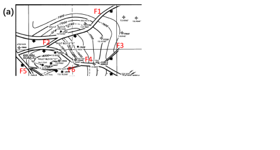
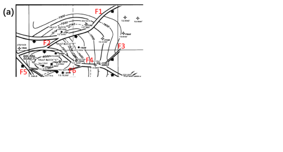

Next: 1.5 WP5: Poroelasticity Up: 1. Weekly Projects Previous: 1.3 WP3: Horizontal Stresses Contents
Consider a 2D problem of a circular cavity subjected to far field effective stresses
 = 12 MPa and
= 12 MPa and
 = 3 MPa.
The diameter of the cavity is 0.2 m.
Rock properties:
= 3 MPa.
The diameter of the cavity is 0.2 m.
Rock properties:  = 10 GPa,
= 10 GPa,  = 0.20, unconfined compression strength  = 30 MPa, tensile strength
= 0.20, unconfined compression strength  = 30 MPa, tensile strength  = 2 MPa.
= 2 MPa.
 and
and
 for a domain
for a domain  = [-1m, +1m], and
= [-1m, +1m], and  = [-1m, +1m]. You may define a polar grid for
= [-1m, +1m]. You may define a polar grid for
 . How far does the presence of the wellbore influence stresses?
= [0.1m, 1m], = 0 m) and ( = 0 m, = [0.1 m, 1 m]). Equations in Ch. 6.2 (https://dnicolasespinoza.github.io/)
for
. How far does the presence of the wellbore influence stresses?
= [0.1m, 1m], = 0 m) and ( = 0 m, = [0.1 m, 1 m]). Equations in Ch. 6.2 (https://dnicolasespinoza.github.io/)
for  = 0.1 m. Is there any section of the rock in shear or tensile failure? Where?
,
and
= 0.1 m. Is there any section of the rock in shear or tensile failure? Where?
,
and
 ) assuming a domain size 2 m by 2 m. Compute
and
for the same lines as in point (b), and compare with Kirsch's analytical solution. Repeat the process for a domain size 0.5 m by 0.5 m. Are there any differences? Why?
.
) assuming a domain size 2 m by 2 m. Compute
and
for the same lines as in point (b), and compare with Kirsch's analytical solution. Repeat the process for a domain size 0.5 m by 0.5 m. Are there any differences? Why?
.
Consider a 2D problem of an elliptical fracture (half-length  = 10 m).
Solve the problem using just half of the domain.
Set the fracture along the left boundary of a domain: = [0 m, 100 m] and = [-50 m, 50 m].
This boundary will have a pressure boundary condition.
All other boundaries will have zero displacement.
Rock properties: = 30 GPa, = 0.20.
= 10 m).
Solve the problem using just half of the domain.
Set the fracture along the left boundary of a domain: = [0 m, 100 m] and = [-50 m, 50 m].
This boundary will have a pressure boundary condition.
All other boundaries will have zero displacement.
Rock properties: = 30 GPa, = 0.20.
,
and
imposing a fracture pressure  = 10 MPa. Plot results.
at the middle of the fracture (=0, = [0, 100 m]). How far does the influence of the fracture extend?
-displacements at the face of the fracture. Compare with analytical equation. Equations in Ch. 7.3.2 (https://dnicolasespinoza.github.io/).
along line (=0, =[0, 100 m]) and compare with analytical solution.
= 10 MPa. Plot results.
at the middle of the fracture (=0, = [0, 100 m]). How far does the influence of the fracture extend?
-displacements at the face of the fracture. Compare with analytical equation. Equations in Ch. 7.3.2 (https://dnicolasespinoza.github.io/).
along line (=0, =[0, 100 m]) and compare with analytical solution.